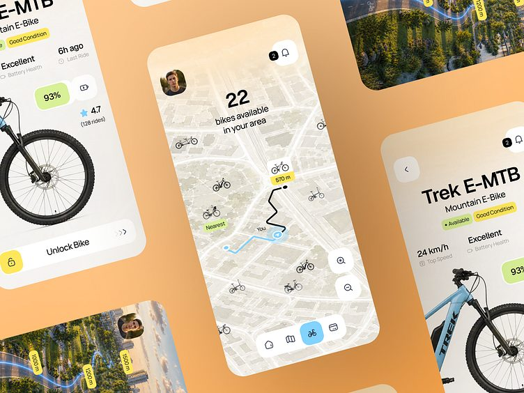

E-Bike Rental App
by Nixtio
移动AppMobile App
亮橙底上多部手机斜着排开，中间地图标着“22 bikes available in your area”，右侧 Trek E-MTB 车型详情配 93% 电量与 Unlock Bike 按钮；租车 App 用“一块橙色 + 一张地图 + 一个解锁按钮”把找车、看车、开锁三步压进一屏。E-Bike Rental App tilts several phones across a bright orange backdrop: a map in the middle reads “22 bikes available in your area,” while a Trek E-MTB card shows 93% battery and an Unlock Bike button; one orange field, one map and one unlock button compress finding, checking and unlocking a bike into a single screen.